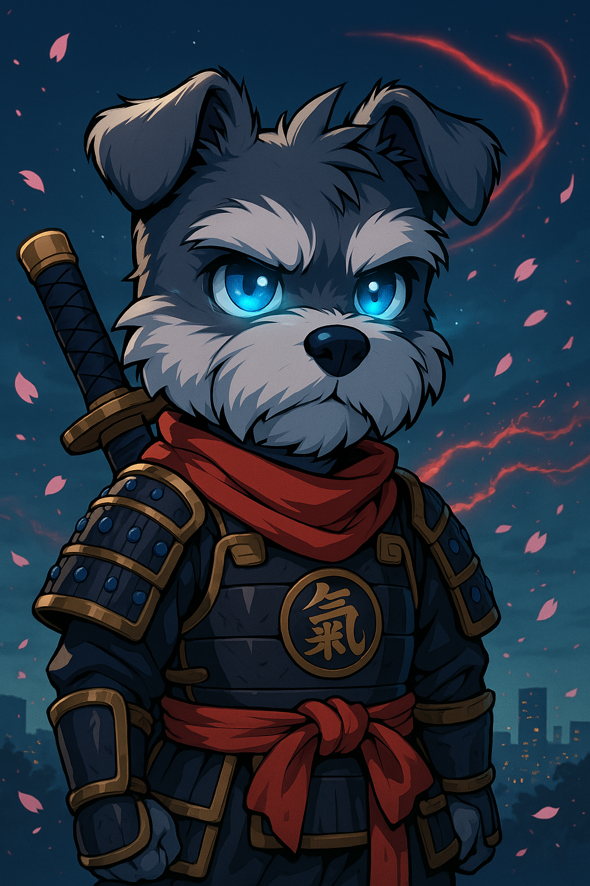
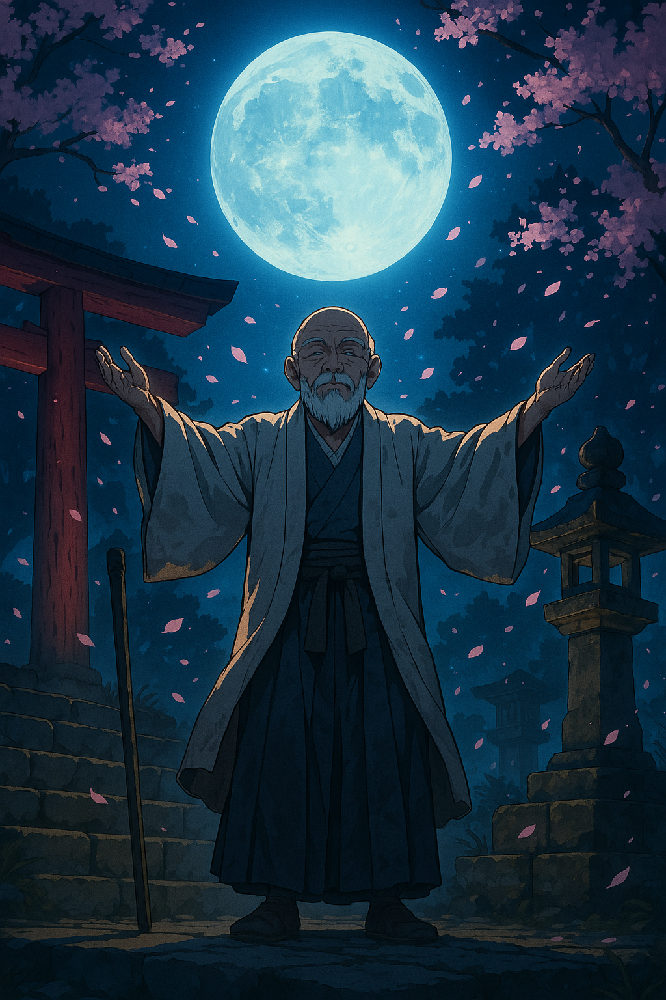
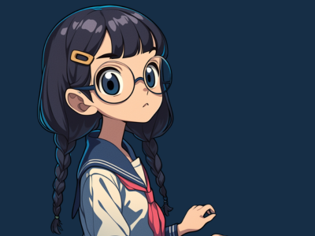
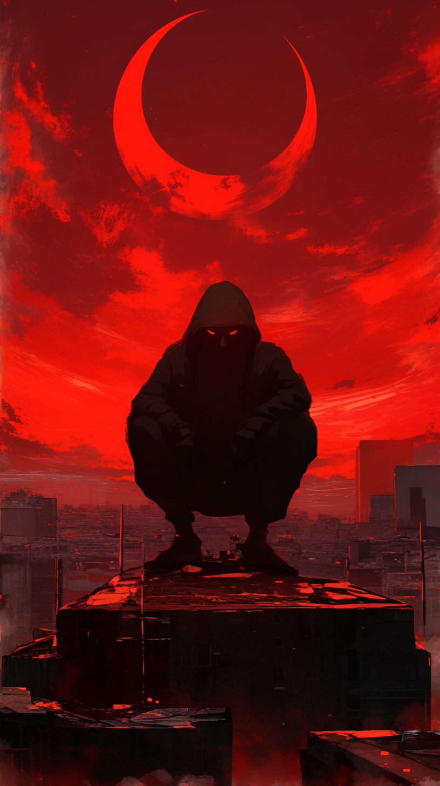

RYO-CHAN の冒険
運命が交錯する時、小さな武者犬が世界を変える
スクロールして続きを読む
↓
Episode 01
覚醒
満月が石段を照らす古い神社の夜。風化した鳥居の向こう、苔むした石畳に天から一筋の光が伸びていた。その光が照らし出したのは、そこで眠る小さな影。運命に導かれるように、一匹の犬がこの神社に迷い込み眠っていた。その名もRYOCHAN。ミニチュアシュナウザーだった。

Episode 02
歪み
東京の夜。窓からは星一つ見えない漆黒の闇が広がっていた。複数のモニターが青白い光を放つ密室。影のような人物たちがキーボードを熱心に叩いていた。彼らの姿は暗闇に溶け込み、光るモニターに照らされた指先だけが動きを見せていた。
登場人物
RYO-CHAN
小さな武者鎧に身を包んだミニチュアシュナウザー。運命に選ばれし者として、この世界の変革を担う使命を持つ。
OLD MAN
古の知識を持つ賢者。月明かりの下で真実を語り、RYO-CHANに重要な導きを与える存在。

SAKURA
桜の花びらと共に現れる謎の少女。その正体と目的は物語が進むにつれて明かされる。
SHADOW
闇に潜むハッカー集団。世界の裏で暗躍し、デジタル世界での影響力を持つ組織。

？？？
すべての謎を握る存在。その正体は物語の核心に関わる重要な秘密を隠している。
物語は始まったばかり
RYO-CHANの冒険に参加しよう。あなたも物語の一部となる時が来た。